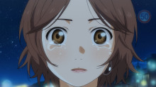
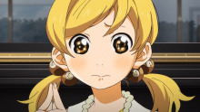
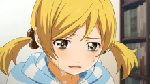
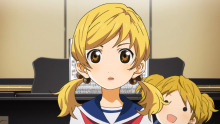

第13话：爱的忧伤
庆典音乐会的当天，出场时间已经到了，但薰并没有出现在会场，于是公生独自一人站上舞台。本应是伴奏者的公生却独自一人登场这一奇怪的状况让会场开始骚动。在这种情形下，公生开始演奏去世的母亲所喜爱的乐曲，克莱斯勒的《爱的忧伤》……
庆典音乐会的当天，出场时间已经到了，但薰并没有出现在会场，于是公生独自一人站上舞台。本应是伴奏者的公生却独自一人登场这一奇怪的状况让会场开始骚动。在这种情形下，公生开始演奏去世的母亲所喜爱的乐曲，克莱斯勒的《爱的忧伤》……
公生他们听说没有出现在庆典音乐会上的薰在自家倒下而住院，于是连忙赶往医院。虽然薰表现得很有精神，但她的身体状况似乎没那么好。另一方面，椿则有意不去直视自幼开始与公生之间的良好关系由于薰的出现而有所变化这一事实，以及自己面对公生时心情的变化……
得知公生为了考入有音乐系的高中将要离开家，小椿感到彷徨不安。小椿始终认为公生是如同弟弟一般的存在，但在她的内心深处公生已经成了更重要的存在，周围的人也注意到这一事实，就连和小椿交往的斋藤学长也不例外。斋藤学长主动提出了分手，失意的小椿来到音乐教室，公生顺着钢琴声找到了她……
薰的病情愈加严重，但仍旧心系着音乐。公生开始指导师从濑户老师的凪，一开始由于初次指导而感到困惑的公生，也变得有老师的样子了。放学后，本该住院的薰突然出现在公生面前，并指定公生做渡的代班，陪她一起去逛街。晚上公生和薰来到学校，两人互相承诺了永不忘记对方的誓言。
得知薰的病情后，公生陷入了沉默。椿邀请公生去探望薰，但公生却对此没有兴致。公生不知道要对薰说什么样的话，要以什么样的表情和她相见，于是无法踏出一步。凪对于连练习都无法投入的公生感到担心，她以自己的方式鼓励着公生。公生鼓起勇气来到薰面前，此时他终于明白了自己演奏的意义。
在学园祭的舞台上，公生与凪联弹的演奏会吸引了众人的眼光，很好的开头后本是支援者的公生却突然加快了节奏，这让凪陷入了恐慌。身为伴奏者的公生开始吞噬主旋律，但凪也并没有示弱，两人的演奏渐渐变得合拍，在公生的鞭策下凪也开始上升，两人都为了想要传达的对象倾尽全力的演奏者，渐渐重合的两人都用琴音表达出了自己的感受。
听到公生和凪的连弹后，薰为了再一次和公生合奏而决定接受手术。薰激励着以音乐会为目标而开始练习的公生，自己也以再次登上舞台为目标进行着康复训练。小椿为了追随公生而拼命学习，看着同样拼命的公生，小椿感到心疼。音乐会当天，公生在后台遇到了武士和井川，原本十分紧张的武士在闲聊后完全放松下来，他满怀着对公生的憧憬弹出了让人叫绝的曲子。